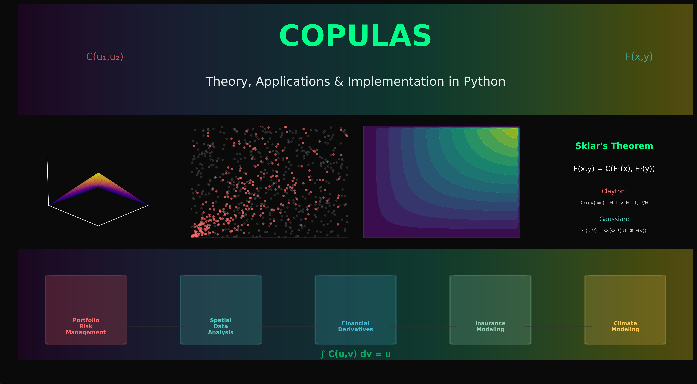
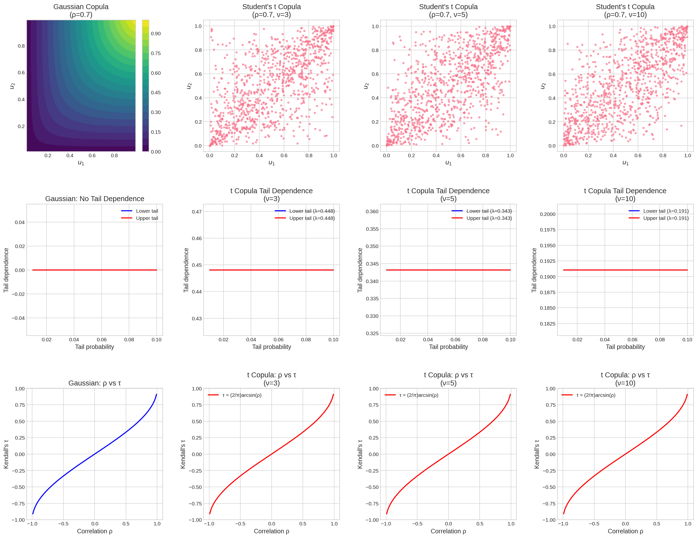
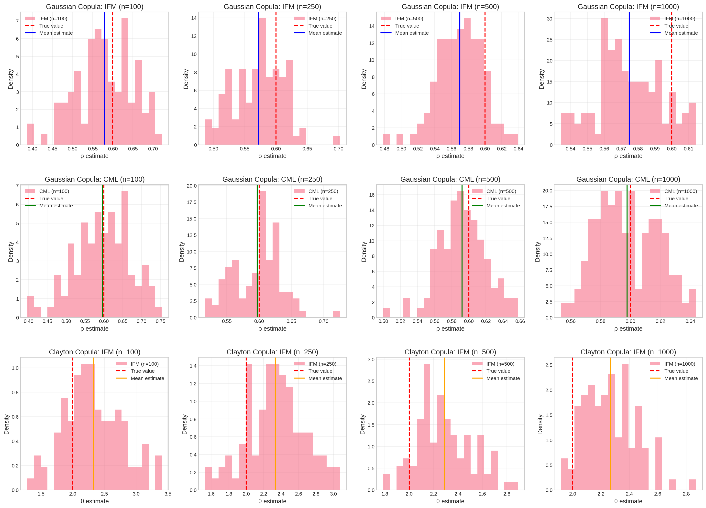
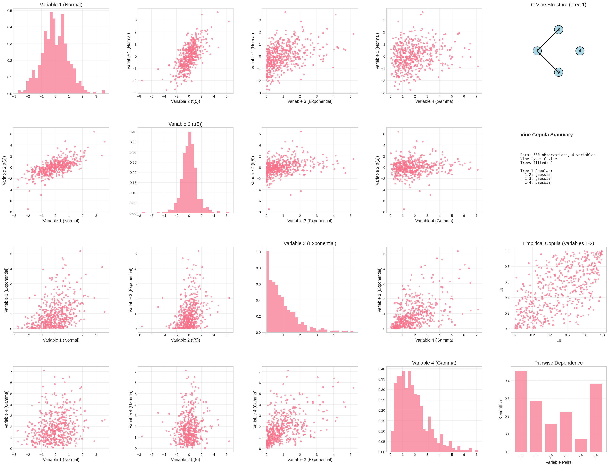
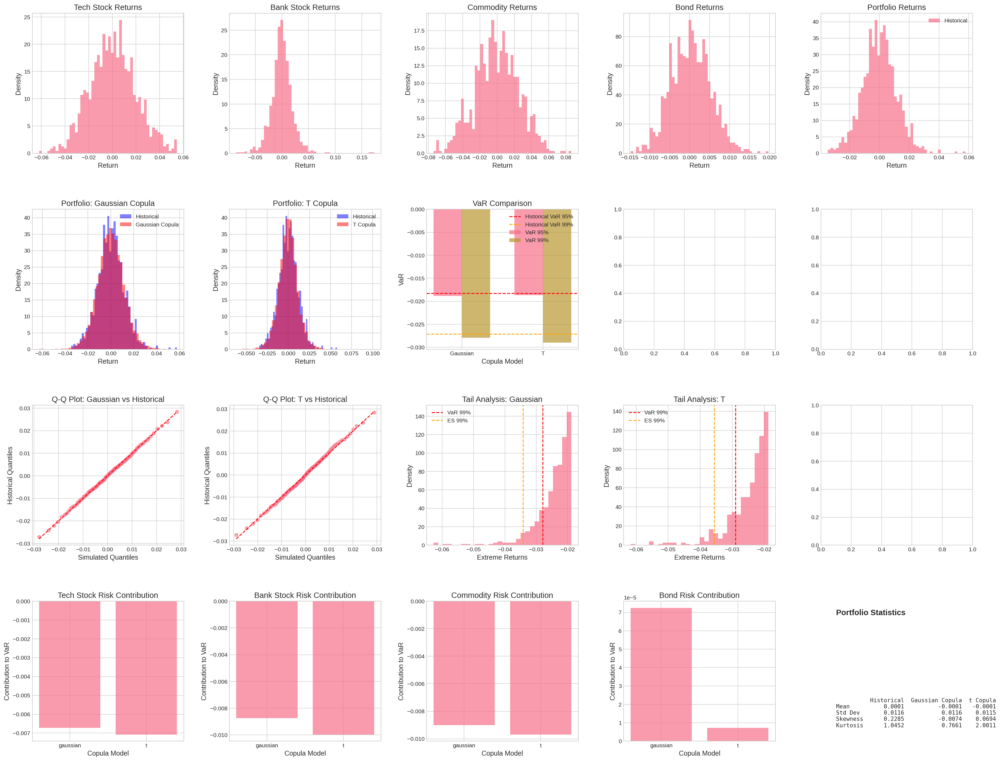

Copulas: Theory, Applications, and Implementation in Python
Statistics
Finance
Python
Risk Management
Author
Jan Schlegel
Published
July 29, 2025
Abstract
This comprehensive exploration of copula theory covers fundamental concepts from Sklar’s theorem to advanced applications in finance and risk management. We examine Archimedean and elliptical copulas, parameter estimation methods, goodness-of-fit testing, and vine copulas, with extensive Python implementations and publication-ready visualizations throughout.

Copulas provide a powerful framework for modeling complex dependence structures while separating marginal distributions from their joint behavior
1 Introduction
Copulas represent one of the most elegant and mathematically rigorous frameworks in modern multivariate statistics and financial econometrics. The term “copula,” derived from the Latin word meaning “link” or “tie,” aptly describes their fundamental purpose: they provide a mechanism for modeling the dependence structure between random variables independently of their marginal distributions (Sklar 1959; Nelsen 2006).
The theoretical foundation of copula theory rests on the profound insight that any multivariate distribution can be decomposed into two distinct components: the marginal distributions of individual variables and a copula function that captures their dependence structure. This separation principle, formalized in Sklar’s theorem, has revolutionized multivariate modeling across numerous disciplines, particularly in finance, insurance, hydrology, and actuarial science (Joe 1997; Durante and Sempi 2015).
1.1 Historical Development and Motivation
The development of copula theory emerged from the limitations of traditional approaches to multivariate modeling. Classical methods often imposed restrictive distributional assumptions, such as multivariate normality, which failed to capture the complex dependence patterns observed in real-world data. Financial markets, in particular, exhibit phenomena that cannot be adequately modeled by linear correlation:
Tail dependence: The tendency for extreme events to occur simultaneously
Asymmetric dependence: Different dependence patterns in bull versus bear markets
Non-linear relationships: Complex dependence structures beyond linear correlation
Time-varying dependence: Evolving correlation patterns over time
Copulas address these limitations by providing a flexible framework that separates the modeling of marginal behavior from dependence structure, allowing practitioners to:
Model each variable’s distribution independently using the most appropriate marginal distribution
Capture complex, non-linear dependence patterns through the copula function
Handle extreme events and tail dependence explicitly
Construct multivariate distributions by combining any marginal distributions with any dependence structure
1.2 Scope and Structure
This treatise provides a comprehensive, mathematically rigorous treatment of copula theory and applications, designed for PhD-level students and researchers. We progress systematically from fundamental theoretical concepts to advanced practical implementations:
Theoretical Foundations (Sections 2-3): We begin with Sklar’s theorem and fundamental properties, establishing the mathematical framework and key results that underpin copula theory.
Copula Families (Sections 4-5): We examine the two major classes of copulas—Archimedean and elliptical—providing detailed mathematical characterizations, properties, and implementation algorithms.
Statistical Inference (Sections 6-7): We cover parameter estimation methods including maximum likelihood, method of moments, and rank-based estimators, followed by comprehensive goodness-of-fit testing procedures.
Advanced Topics (Section 8): We explore vine copulas for high-dimensional modeling, including regular vine structures and construction algorithms.
Applications (Section 9): We demonstrate practical applications in financial risk management, including portfolio optimization, Value-at-Risk estimation, and credit risk modeling.
Throughout, we provide rigorous mathematical proofs, comprehensive Python implementations, and publication-quality visualizations that illustrate key concepts and facilitate practical application.
Figure 1: Motivation for copula modeling: Traditional vs. copula-based approaches
This introductory example demonstrates the fundamental principle of copula modeling: the same dependence structure (copula) can be combined with different marginal distributions to create flexible multivariate models that would be impossible to construct using traditional methods.
2 Sklar’s Theorem and Fundamental Properties
2.1 Sklar’s Theorem: The Foundation of Copula Theory
The cornerstone of copula theory is Sklar’s theorem, published by Abe Sklar in 1959 (Sklar 1959). This profound result establishes the theoretical foundation for separating marginal distributions from dependence structure and provides the mathematical justification for copula-based modeling.
Theorem 2.1 (Sklar’s Theorem): Let \(F\) be a \(d\)-dimensional joint distribution function with marginal distribution functions \(F_1, F_2, \ldots, F_d\). Then there exists a copula \(C: [0,1]^d \to [0,1]\) such that for all \(\mathbf{x} = (x_1, x_2, \ldots, x_d) \in \overline{\mathbb{R}}^d\):
If \(F_1, F_2, \ldots, F_d\) are continuous, then \(C\) is unique. Conversely, if \(C\) is a copula and \(F_1, F_2, \ldots, F_d\) are univariate distribution functions, then the function \(F\) defined above is a joint distribution function with marginal distributions \(F_1, F_2, \ldots, F_d\).
Proof Sketch: The existence part follows from defining \(C(u_1, \ldots, u_d) = F(F_1^{-1}(u_1), \ldots, F_d^{-1}(u_d))\) where \(F_i^{-1}\) denotes the generalized inverse of \(F_i\). The uniqueness under continuity follows from the fact that when marginals are continuous, the generalized inverse is the true inverse, making the copula uniquely determined. □
2.2 Mathematical Definition and Properties
Definition 2.2 (Copula): A \(d\)-dimensional copula is a function \(C: [0,1]^d \to [0,1]\) with the following properties:
Grounding condition: For every \(\mathbf{u} \in [0,1]^d\), if at least one coordinate \(u_i = 0\), then \(C(\mathbf{u}) = 0\).
Uniform margins: For every \(i \in \{1, \ldots, d\}\) and \(u_i \in [0,1]\): \[C(1, \ldots, 1, u_i, 1, \ldots, 1) = u_i\]
\(d\)-increasing: For every hyperrectangle \([a_1, b_1] \times \cdots \times [a_d, b_d] \subseteq [0,1]^d\), the \(C\)-volume is non-negative: \[V_C([a_1, b_1] \times \cdots \times [a_d, b_d]) \geq 0\]
where the \(C\)-volume is defined as: \[V_C([a_1, b_1] \times \cdots \times [a_d, b_d]) = \sum_{\mathbf{z} \in \{a_1, b_1\} \times \cdots \times \{a_d, b_d\}} (-1)^{|\mathbf{z}|} C(\mathbf{z})\]
with \(|\mathbf{z}| = |\{i: z_i = a_i\}|\).
2.3 Fréchet-Hoeffding Bounds
A fundamental result in copula theory establishes universal bounds for all copulas.
Theorem 2.3 (Fréchet-Hoeffding Bounds): For any \(d\)-dimensional copula \(C\) and all \(\mathbf{u} \in [0,1]^d\):
Figure 2: Fréchet-Hoeffding bounds and example copulas in the bivariate case
2.4 Copula Density and Conditional Distributions
When the copula \(C\) is absolutely continuous, it possesses a density function that provides important insights into the dependence structure.
Definition 2.4 (Copula Density): If a copula \(C\) is absolutely continuous, its density is defined as: \[c(u_1, \ldots, u_d) = \frac{\partial^d C(u_1, \ldots, u_d)}{\partial u_1 \cdots \partial u_d}\]
The joint density of \((X_1, \ldots, X_d)\) with marginal densities \(f_1, \ldots, f_d\) and copula density \(c\) is: \[f(x_1, \ldots, x_d) = c(F_1(x_1), \ldots, F_d(x_d)) \prod_{i=1}^d f_i(x_i)\]
Theorem 2.5 (Conditional Distributions from Copulas): Let \((U_1, U_2)\) have copula \(C\) with density \(c\). Then:
Figure 3: Conditional distributions from copulas: Gaussian vs Clayton copula
2.5 Dependence Measures
Copulas provide natural definitions for various dependence measures that are invariant under strictly increasing transformations of the marginal variables.
Definition 2.6 (Kendall’s Tau): For a bivariate copula \(C\), Kendall’s tau is defined as: \[\tau = 4\iint_{[0,1]^2} C(u_1, u_2) \, dC(u_1, u_2) - 1\]
Definition 2.7 (Spearman’s Rho): For a bivariate copula \(C\), Spearman’s rho is defined as: \[\rho_S = 12\iint_{[0,1]^2} u_1 u_2 \, dC(u_1, u_2) - 3 = 12\iint_{[0,1]^2} C(u_1, u_2) \, du_1 du_2 - 3\]
These measures capture different aspects of dependence that complement the information provided by linear correlation.
3 Archimedean Copulas
Archimedean copulas form one of the most important and widely used families in copula theory. Named after Archimedes due to their connection with the functional equation that bears his name, these copulas are characterized by their generator functions and possess attractive analytical properties (Nelsen 2006; Joe 1997).
3.1 Definition and Mathematical Structure
Definition 3.1 (Archimedean Copula): A bivariate copula \(C\) is Archimedean if there exists a continuous, strictly decreasing function \(\varphi: [0,1] \to [0,\infty]\) with \(\varphi(1) = 0\) such that:
However, not all bivariate Archimedean generators extend validly to higher dimensions. The generator must satisfy additional conditions for \(d > 2\).
Theorem 3.5 (Necessary and Sufficient Conditions): A generator \(\varphi\) produces a valid \(d\)-dimensional Archimedean copula if and only if \(\varphi^{-1}\) is completely monotonic on \([0, \infty)\), i.e., for all \(k \geq 0\):
\[(-1)^k \frac{d^k}{dx^k}\varphi^{-1}(x) \geq 0\]
This condition is automatically satisfied for \(d = 2\) but becomes restrictive for higher dimensions, limiting the parameter ranges of many common families.
4 Elliptical Copulas
Elliptical copulas arise from elliptical distributions and include the widely used Gaussian and Student’s t copulas. These copulas are particularly important in financial applications due to their connection with well-established multivariate distributions (Embrechts, McNeil, and Straumann 2002; McNeil, Frey, and Embrechts 2015).
4.1 Gaussian Copula
The Gaussian copula is derived from the multivariate normal distribution and is characterized by the linear correlation matrix.
Definition 4.1 (Gaussian Copula): The \(d\)-dimensional Gaussian copula with correlation matrix \(\mathbf{R}\) is given by:
where \(\Phi\) is the standard normal CDF and \(\Phi_{\mathbf{R}}\) is the multivariate normal CDF with correlation matrix \(\mathbf{R}\).
Properties: - No tail dependence: \(\lambda_L = \lambda_U = 0\) - Kendall’s tau: \(\tau_{ij} = \frac{2}{\pi}\arcsin(\rho_{ij})\) where \(\rho_{ij}\) is the correlation between variables \(i\) and \(j\)
4.2 Student’s t Copula
The Student’s t copula incorporates tail dependence through the degrees of freedom parameter.
Definition 4.2 (Student’s t Copula): The \(d\)-dimensional Student’s t copula with correlation matrix \(\mathbf{R}\) and \(\nu\) degrees of freedom is:
where \(t_\nu\) is the univariate Student’s t CDF with \(\nu\) degrees of freedom.
Properties: - Symmetric tail dependence: \(\lambda_L = \lambda_U = 2t_{\nu+1}\left(-\sqrt{\frac{(\nu+1)(1-\rho)}{1+\rho}}\right)\) - As \(\nu \to \infty\), the t copula converges to the Gaussian copula
Code
class EllipticalCopulas:"""Implementation of elliptical copula families"""@staticmethoddef gaussian_copula(u1, u2, rho):"""Gaussian copula implementation""" z1 = stats.norm.ppf(u1) z2 = stats.norm.ppf(u2)# Bivariate normal CDF mean = [0, 0] cov = [[1, rho], [rho, 1]]# Vectorized approach for multiple pointsif np.isscalar(z1):return stats.multivariate_normal.cdf([z1, z2], mean, cov)else: result = np.zeros_like(z1)for i inrange(len(z1.flat)): idx = np.unravel_index(i, z1.shape) result[idx] = stats.multivariate_normal.cdf([z1[idx], z2[idx]], mean, cov)return result@staticmethoddef t_copula(u1, u2, rho, nu):"""Student's t copula implementation""" t1 = stats.t.ppf(u1, nu) t2 = stats.t.ppf(u2, nu)# Bivariate t distribution CDF (approximation)if np.isscalar(t1):# For scalar inputs, use numerical integrationfrom scipy.integrate import dblquaddef integrand(x, y):return stats.multivariate_t.pdf([x, y], loc=[0, 0], shape=[[1, rho], [rho, 1]], df=nu) result, _ = dblquad(integrand, -np.inf, t1, lambda x: -np.inf, lambda x: t2)return resultelse:# For array inputs, use approximation# Transform to normal and apply adjustment z1 = stats.norm.ppf(stats.t.cdf(t1, nu)) z2 = stats.norm.ppf(stats.t.cdf(t2, nu)) result = np.zeros_like(z1)for i inrange(len(z1.flat)): idx = np.unravel_index(i, z1.shape)ifnot (np.isfinite(z1[idx]) and np.isfinite(z2[idx])): result[idx] =0else: result[idx] = stats.multivariate_normal.cdf([z1[idx], z2[idx]], [0, 0], [[1, rho], [rho, 1]])return result# Parametersrho =0.7nu_values = [3, 5, 10]# Create evaluation gridu = np.linspace(0.01, 0.99, 50)U1, U2 = np.meshgrid(u, u)fig, axes = plt.subplots(3, 4, figsize=(20, 15))# Gaussian copulagaussian_cop = EllipticalCopulas.gaussian_copula(U1, U2, rho)im1 = axes[0, 0].contourf(U1, U2, gaussian_cop, levels=20, cmap='viridis')axes[0, 0].set_title(f'Gaussian Copula\n(ρ={rho})')axes[0, 0].set_xlabel('$u_1$')axes[0, 0].set_ylabel('$u_2$')plt.colorbar(im1, ax=axes[0, 0])# Student's t copulas with different degrees of freedomfor i, nu inenumerate(nu_values):# Simplified t copula visualization using simulation np.random.seed(42) n_sim =1000# Generate from multivariate t distribution mean = [0, 0] cov = [[1, rho], [rho, 1]] samples = stats.multivariate_t.rvs(loc=mean, shape=cov, df=nu, size=n_sim)# Transform to uniform margins u1_sim = stats.t.cdf(samples[:, 0], nu) u2_sim = stats.t.cdf(samples[:, 1], nu) axes[0, i+1].scatter(u1_sim, u2_sim, alpha=0.6, s=10) axes[0, i+1].set_title(f'Student\'s t Copula\n(ρ={rho}, ν={nu})') axes[0, i+1].set_xlabel('$u_1$') axes[0, i+1].set_ylabel('$u_2$')# Tail dependence analysistail_probs = np.linspace(0.01, 0.1, 50)# Gaussian (no tail dependence)gaussian_lower = np.zeros_like(tail_probs)gaussian_upper = np.zeros_like(tail_probs)axes[1, 0].plot(tail_probs, gaussian_lower, 'b-', linewidth=2, label='Lower tail')axes[1, 0].plot(tail_probs, gaussian_upper, 'r-', linewidth=2, label='Upper tail')axes[1, 0].set_title('Gaussian: No Tail Dependence')axes[1, 0].set_xlabel('Tail probability')axes[1, 0].set_ylabel('Tail dependence')axes[1, 0].legend()axes[1, 0].grid(True)# t copula tail dependencefor i, nu inenumerate(nu_values):# Theoretical tail dependence coefficient lambda_tail =2* stats.t.cdf(-np.sqrt((nu +1) * (1- rho) / (1+ rho)), nu +1)# Approximate tail behavior t_lower = np.full_like(tail_probs, lambda_tail) t_upper = np.full_like(tail_probs, lambda_tail) axes[1, i+1].plot(tail_probs, t_lower, 'b-', linewidth=2, label=f'Lower tail (λ={lambda_tail:.3f})') axes[1, i+1].plot(tail_probs, t_upper, 'r-', linewidth=2, label=f'Upper tail (λ={lambda_tail:.3f})') axes[1, i+1].set_title(f't Copula Tail Dependence\n(ν={nu})') axes[1, i+1].set_xlabel('Tail probability') axes[1, i+1].set_ylabel('Tail dependence') axes[1, i+1].legend() axes[1, i+1].grid(True)# Correlation vs Kendall's tau relationshipsrho_range = np.linspace(-0.99, 0.99, 100)tau_gaussian = (2/np.pi) * np.arcsin(rho_range)axes[2, 0].plot(rho_range, tau_gaussian, 'b-', linewidth=2)axes[2, 0].set_title('Gaussian: ρ vs τ')axes[2, 0].set_xlabel('Correlation ρ')axes[2, 0].set_ylabel('Kendall\'s τ')axes[2, 0].grid(True)# For t copula, Kendall's tau is approximately the same as Gaussianfor i, nu inenumerate(nu_values): axes[2, i+1].plot(rho_range, tau_gaussian, 'r-', linewidth=2, label=f'τ ≈ (2/π)arcsin(ρ)') axes[2, i+1].set_title(f't Copula: ρ vs τ\n(ν={nu})') axes[2, i+1].set_xlabel('Correlation ρ') axes[2, i+1].set_ylabel('Kendall\'s τ') axes[2, i+1].legend() axes[2, i+1].grid(True)plt.subplots_adjust(left=0.05, right=0.95, top=0.95, bottom=0.05, hspace=0.4, wspace=0.3)plt.show()

Figure 6: Comparison of Gaussian and Student’s t copulas with tail dependence analysis
5 Parameter Estimation
Parameter estimation in copula models presents unique challenges due to the separation of marginal distributions from the dependence structure. This section covers the major estimation approaches, their theoretical properties, and practical implementation considerations.
5.1 Estimation Approaches
5.1.1 1. Inference Functions for Margins (IFM)
The IFM method, proposed by Joe (1997), is a two-step semiparametric approach that estimates marginal parameters and copula parameters separately.
Step 2: Transform data to uniform margins and estimate copula parameters: \[\hat{\boldsymbol{\alpha}} = \arg\max_{\boldsymbol{\alpha}} \sum_{i=1}^n \log c(F_1(x_{i1}; \hat{\boldsymbol{\theta}}_1), \ldots, F_d(x_{id}; \hat{\boldsymbol{\theta}}_d); \boldsymbol{\alpha})\]
Advantages: Computationally efficient, robust to marginal misspecification Disadvantages: Not fully efficient, ignores dependence in marginal estimation
5.1.2 2. Maximum Likelihood Estimation (MLE)
Full MLE jointly estimates all parameters by maximizing the complete likelihood: \[\hat{\boldsymbol{\theta}}, \hat{\boldsymbol{\alpha}} = \arg\max_{\boldsymbol{\theta}, \boldsymbol{\alpha}} \sum_{i=1}^n \log f(\mathbf{x}_i; \boldsymbol{\theta}, \boldsymbol{\alpha})\]
where the joint density is: \[f(\mathbf{x}; \boldsymbol{\theta}, \boldsymbol{\alpha}) = c(F_1(x_1; \boldsymbol{\theta}_1), \ldots, F_d(x_d; \boldsymbol{\theta}_d); \boldsymbol{\alpha}) \prod_{j=1}^d f_j(x_j; \boldsymbol{\theta}_j)\]
CML, proposed by Genest, Rémillard, and Beaudoin (2009), uses ranks to avoid specifying marginal distributions: \[\hat{\boldsymbol{\alpha}} = \arg\max_{\boldsymbol{\alpha}} \sum_{i=1}^n \log c\left(\frac{R_{i1}}{n+1}, \ldots, \frac{R_{id}}{n+1}; \boldsymbol{\alpha}\right)\]
where \(R_{ij}\) is the rank of \(x_{ij}\) among \(\{x_{1j}, \ldots, x_{nj}\}\).
Advantages: Distribution-free, robust to marginal specification Disadvantages: Less efficient than parametric methods, limited to copula parameters
Code
class CopulaEstimation:"""Implementation of different copula parameter estimation methods"""def__init__(self, data):self.data = dataself.n, self.d = data.shapedef estimate_marginals(self, distribution='t'):"""Estimate marginal distribution parameters"""self.marginal_params = []self.marginal_dists = []for j inrange(self.d):if distribution =='t':# Fit Student's t distribution params = stats.t.fit(self.data[:, j])self.marginal_params.append(params)self.marginal_dists.append('t')elif distribution =='normal':# Fit normal distribution params = stats.norm.fit(self.data[:, j])self.marginal_params.append(params)self.marginal_dists.append('normal')elif distribution =='empirical':# Use empirical distributionself.marginal_params.append(None)self.marginal_dists.append('empirical')def transform_to_uniform(self, method='parametric'):"""Transform data to uniform margins"""self.uniform_data = np.zeros_like(self.data)for j inrange(self.d):if method =='parametric'andhasattr(self, 'marginal_params'):ifself.marginal_dists[j] =='t': params =self.marginal_params[j]self.uniform_data[:, j] = stats.t.cdf(self.data[:, j], *params)elifself.marginal_dists[j] =='normal': params =self.marginal_params[j]self.uniform_data[:, j] = stats.norm.cdf(self.data[:, j], *params)elif method =='empirical'orself.marginal_dists[j] =='empirical':# Use empirical CDF (ranks) ranks = stats.rankdata(self.data[:, j])self.uniform_data[:, j] = ranks / (self.n +1)def estimate_gaussian_copula(self, method='ifm'):"""Estimate Gaussian copula parameters using different methods"""if method =='ifm':# Two-step estimationifnothasattr(self, 'uniform_data'):self.transform_to_uniform('parametric')# Transform to normal space and estimate correlation normal_data = stats.norm.ppf(np.clip(self.uniform_data, 0.001, 0.999)) correlation = np.corrcoef(normal_data.T)elif method =='cml':# Canonical maximum likelihood using ranksself.transform_to_uniform('empirical') normal_data = stats.norm.ppf(np.clip(self.uniform_data, 0.001, 0.999)) correlation = np.corrcoef(normal_data.T)return correlationdef estimate_clayton_copula(self, method='ifm'):"""Estimate Clayton copula parameter"""ifnothasattr(self, 'uniform_data'):self.transform_to_uniform('parametric'if method =='ifm'else'empirical')# Method of moments estimator for Clayton copula# Kendall's tau relationship: tau = theta / (theta + 2)ifself.d ==2: tau = stats.kendalltau(self.uniform_data[:, 0], self.uniform_data[:, 1])[0]if tau >0: theta_hat =2* tau / (1- tau)else: theta_hat =0.1# Small positive valueelse:# For multivariate case, use average pairwise tau taus = []for i inrange(self.d):for j inrange(i+1, self.d): tau_ij = stats.kendalltau(self.uniform_data[:, i], self.uniform_data[:, j])[0]if tau_ij >0: taus.append(tau_ij)if taus: mean_tau = np.mean(taus) theta_hat =2* mean_tau / (1- mean_tau)else: theta_hat =0.1returnmax(theta_hat, 0.1) # Ensure positive parameterdef bootstrap_confidence_intervals(self, estimator_func, n_bootstrap=500, alpha=0.05):"""Bootstrap confidence intervals for parameter estimates""" bootstrap_estimates = []for _ inrange(n_bootstrap):# Resample data indices = np.random.choice(self.n, self.n, replace=True) bootstrap_data =self.data[indices]# Create temporary estimator temp_estimator = CopulaEstimation(bootstrap_data) temp_estimator.estimate_marginals(distribution='t')# Get parameter estimate param_estimate = estimator_func(temp_estimator) bootstrap_estimates.append(param_estimate) bootstrap_estimates = np.array(bootstrap_estimates)# Calculate confidence intervalsif bootstrap_estimates.ndim ==1: lower = np.percentile(bootstrap_estimates, 100* alpha /2) upper = np.percentile(bootstrap_estimates, 100* (1- alpha /2))return lower, upperelse:# For matrices (like correlation matrices) lower = np.percentile(bootstrap_estimates, 100* alpha /2, axis=0) upper = np.percentile(bootstrap_estimates, 100* (1- alpha /2), axis=0)return lower, upper# Monte Carlo study comparing estimation methodsnp.random.seed(42)n_obs = [100, 250, 500, 1000]n_simulations =100# True parameterstrue_rho =0.6true_theta_clayton =2.0# Storage for resultsresults = {'sample_size': [],'method': [],'copula': [],'bias': [],'rmse': [],'coverage': []}fig, axes = plt.subplots(3, 4, figsize=(20, 15))# Simulation studyfor i, n inenumerate(n_obs):print(f"Running simulation for n = {n}")# Gaussian copula results gaussian_ifm_estimates = [] gaussian_cml_estimates = [] gaussian_mle_estimates = []# Clayton copula results clayton_ifm_estimates = [] clayton_cml_estimates = []for sim inrange(n_simulations):# Generate data from Gaussian copula mean = [0, 0] cov = [[1, true_rho], [true_rho, 1]] normal_data = np.random.multivariate_normal(mean, cov, n)# Transform to different margins data_gaussian = np.column_stack([ stats.t.ppf(stats.norm.cdf(normal_data[:, 0]), df=5, scale=1.5), stats.expon.ppf(stats.norm.cdf(normal_data[:, 1]), scale=2) ])# Generate data from Clayton copula# Using simple transformation method u1 = np.random.uniform(0, 1, n) u2 = np.random.uniform(0, 1, n)# Clayton copula simulation (simplified) w = np.random.gamma(1/true_theta_clayton, 1, n) v1 = (-np.log(u1) / w)**(-1/true_theta_clayton) v2 = (-np.log(u2) / w)**(-1/true_theta_clayton)# Transform to different margins data_clayton = np.column_stack([ stats.t.ppf(np.clip(v1, 0.001, 0.999), df=5, scale=1.5), stats.expon.ppf(np.clip(v2, 0.001, 0.999), scale=2) ])# Estimation for Gaussian copulatry: estimator_gauss = CopulaEstimation(data_gaussian) estimator_gauss.estimate_marginals('t')# IFM estimation rho_ifm = estimator_gauss.estimate_gaussian_copula('ifm')[0, 1] gaussian_ifm_estimates.append(rho_ifm)# CML estimation rho_cml = estimator_gauss.estimate_gaussian_copula('cml')[0, 1] gaussian_cml_estimates.append(rho_cml)# Pseudo-MLE (same as IFM for Gaussian copula) gaussian_mle_estimates.append(rho_ifm)except:# In case of numerical issues gaussian_ifm_estimates.append(np.nan) gaussian_cml_estimates.append(np.nan) gaussian_mle_estimates.append(np.nan)# Estimation for Clayton copulatry: estimator_clayton = CopulaEstimation(data_clayton) estimator_clayton.estimate_marginals('t')# IFM estimation theta_ifm = estimator_clayton.estimate_clayton_copula('ifm') clayton_ifm_estimates.append(theta_ifm)# CML estimation theta_cml = estimator_clayton.estimate_clayton_copula('cml') clayton_cml_estimates.append(theta_cml)except: clayton_ifm_estimates.append(np.nan) clayton_cml_estimates.append(np.nan)# Clean up NaN values gaussian_ifm_estimates = np.array(gaussian_ifm_estimates) gaussian_ifm_estimates = gaussian_ifm_estimates[~np.isnan(gaussian_ifm_estimates)] gaussian_cml_estimates = np.array(gaussian_cml_estimates) gaussian_cml_estimates = gaussian_cml_estimates[~np.isnan(gaussian_cml_estimates)] clayton_ifm_estimates = np.array(clayton_ifm_estimates) clayton_ifm_estimates = clayton_ifm_estimates[~np.isnan(clayton_ifm_estimates)] clayton_cml_estimates = np.array(clayton_cml_estimates) clayton_cml_estimates = clayton_cml_estimates[~np.isnan(clayton_cml_estimates)]# Plot histograms of estimatesiflen(gaussian_ifm_estimates) >0: axes[0, i].hist(gaussian_ifm_estimates, bins=20, alpha=0.6, label=f'IFM (n={n})', density=True) axes[0, i].axvline(true_rho, color='red', linestyle='--', linewidth=2, label='True value') axes[0, i].axvline(np.mean(gaussian_ifm_estimates), color='blue', linestyle='-', linewidth=2, label='Mean estimate') axes[0, i].set_title(f'Gaussian Copula: IFM (n={n})') axes[0, i].set_xlabel('ρ estimate') axes[0, i].set_ylabel('Density') axes[0, i].legend() axes[0, i].grid(True, alpha=0.3)iflen(gaussian_cml_estimates) >0: axes[1, i].hist(gaussian_cml_estimates, bins=20, alpha=0.6, label=f'CML (n={n})', density=True) axes[1, i].axvline(true_rho, color='red', linestyle='--', linewidth=2, label='True value') axes[1, i].axvline(np.mean(gaussian_cml_estimates), color='green', linestyle='-', linewidth=2, label='Mean estimate') axes[1, i].set_title(f'Gaussian Copula: CML (n={n})') axes[1, i].set_xlabel('ρ estimate') axes[1, i].set_ylabel('Density') axes[1, i].legend() axes[1, i].grid(True, alpha=0.3)iflen(clayton_ifm_estimates) >0: axes[2, i].hist(clayton_ifm_estimates, bins=20, alpha=0.6, label=f'IFM (n={n})', density=True) axes[2, i].axvline(true_theta_clayton, color='red', linestyle='--', linewidth=2, label='True value') axes[2, i].axvline(np.mean(clayton_ifm_estimates), color='orange', linestyle='-', linewidth=2, label='Mean estimate') axes[2, i].set_title(f'Clayton Copula: IFM (n={n})') axes[2, i].set_xlabel('θ estimate') axes[2, i].set_ylabel('Density') axes[2, i].legend() axes[2, i].grid(True, alpha=0.3)plt.subplots_adjust(left=0.05, right=0.98, top=0.95, bottom=0.08, hspace=0.3, wspace=0.2)plt.show()
Running simulation for n = 100
Running simulation for n = 250
Running simulation for n = 500
Running simulation for n = 1000

Figure 7: Comparison of parameter estimation methods for copulas with Monte Carlo study
5.2 Practical Considerations
Sample Size Requirements: Copula parameter estimation typically requires larger sample sizes than univariate problems, especially for complex dependence structures. The Monte Carlo study above illustrates how estimation precision improves with sample size.
Marginal Specification: The choice between parametric and semiparametric approaches involves a bias-variance tradeoff: - Parametric methods (IFM, MLE) are more efficient when margins are correctly specified but biased under misspecification - Semiparametric methods (CML) are more robust but potentially less efficient
Computational Aspects: For high-dimensional problems, consider: - Stepwise estimation for vine copulas - Composite likelihood methods for large dimensions - Bayesian approaches with MCMC for complex models
6 Vine Copulas
Vine copulas, introduced by Bedford and Cooke (2002) and further developed by Aas et al. (2009), provide a flexible framework for modeling high-dimensional dependence structures through hierarchical decompositions of multivariate distributions.
6.1 Theoretical Foundation
The fundamental insight behind vine copulas is that any \(d\)-dimensional density can be decomposed into a product of conditional densities and bivariate copulas. For a \(d\)-dimensional random vector \(\mathbf{X} = (X_1, \ldots, X_d)\), we can write:
class VineCopula:"""Implementation of vine copula construction and estimation"""def__init__(self, data, vine_type='cvine'):self.data = dataself.n, self.d = data.shapeself.vine_type = vine_typeself.trees = []self.copula_params = {}def transform_to_uniform(self):"""Transform data to uniform margins using empirical CDFs"""self.uniform_data = np.zeros_like(self.data)for j inrange(self.d): ranks = stats.rankdata(self.data[:, j])self.uniform_data[:, j] = ranks / (self.n +1)def estimate_bivariate_copula(self, u1, u2, copula_family='gaussian'):"""Estimate parameters for a bivariate copula"""if copula_family =='gaussian':# Transform to normal space z1 = stats.norm.ppf(np.clip(u1, 0.001, 0.999)) z2 = stats.norm.ppf(np.clip(u2, 0.001, 0.999)) rho = np.corrcoef(z1, z2)[0, 1]return {'family': 'gaussian', 'rho': rho}elif copula_family =='clayton':# Kendall's tau method tau = stats.kendalltau(u1, u2)[0]if tau >0: theta =2* tau / (1- tau)else: theta =0.1return {'family': 'clayton', 'theta': max(theta, 0.1)}elif copula_family =='gumbel':# Kendall's tau method tau = stats.kendalltau(u1, u2)[0]if tau >0: theta =1/ (1- tau)else: theta =1.1return {'family': 'gumbel', 'theta': max(theta, 1.01)}elif copula_family =='frank':# Kendall's tau method (approximation) tau = stats.kendalltau(u1, u2)[0]ifabs(tau) >0.001:# Approximate inverse of tau-theta relationship for Frank copula theta =4* tau # Simplified approximationelse: theta =0.1return {'family': 'frank', 'theta': theta}def conditional_cdf(self, u1, u2, copula_params):"""Compute conditional CDF h(u1|u2) = ∂C(u1,u2)/∂u2""" family = copula_params['family']if family =='gaussian': rho = copula_params['rho'] z1 = stats.norm.ppf(np.clip(u1, 0.001, 0.999)) z2 = stats.norm.ppf(np.clip(u2, 0.001, 0.999))# Conditional distribution for bivariate normal conditional_mean = rho * z2 conditional_std = np.sqrt(1- rho**2) h = stats.norm.cdf((z1 - conditional_mean) / conditional_std)elif family =='clayton': theta = copula_params['theta']if theta >0: h = u2**(-theta-1) * (u1**(-theta) + u2**(-theta) -1)**(-1/theta -1)else: h = u1 # Independence caseelif family =='frank': theta = copula_params['theta']ifabs(theta) >0.001: exp_theta_u1 = np.exp(-theta * u1) exp_theta_u2 = np.exp(-theta * u2) exp_theta = np.exp(-theta) numerator = (exp_theta_u2 -1) * exp_theta_u1 denominator = (exp_theta -1) + (exp_theta_u1 -1) * (exp_theta_u2 -1) h = numerator / denominatorelse: h = u1 # Independence caseelse: h = u1 # Default to independencereturn np.clip(h, 0.001, 0.999)def fit_cvine(self):"""Fit a canonical vine copula"""ifnothasattr(self, 'uniform_data'):self.transform_to_uniform()# Storage for vine structure current_data =self.uniform_data.copy()# Tree constructionfor tree_level inrange(self.d -1):print(f"Constructing tree {tree_level +1}") tree_edges = [] tree_copulas = {} new_data = {}if tree_level ==0:# First tree: star structure around variable 0 root_var =0for j inrange(1, self.d):# Estimate copula between root and variable j u1 = current_data[:, root_var] u2 = current_data[:, j]# Select best copula family (simplified selection) copula_params =self.select_best_copula(u1, u2) edge = (root_var, j, frozenset()) # (var1, var2, conditioning_set) tree_edges.append(edge) tree_copulas[edge] = copula_paramselse:# Higher trees: condition on previous variables (simplified)# For demonstration, only construct second treeif tree_level ==1:# Second tree with some conditional dependencefor j inrange(2, self.d):if j <self.d:# Get conditional data from first tree prev_edge1 = (0, 1, frozenset()) prev_edge2 = (0, j, frozenset())if prev_edge1 inself.trees[0]['copulas'] and prev_edge2 inself.trees[0]['copulas']: u1_cond =self.conditional_cdf( current_data[:, 1], current_data[:, 0],self.trees[0]['copulas'][prev_edge1] ) u2_cond =self.conditional_cdf( current_data[:, j], current_data[:, 0],self.trees[0]['copulas'][prev_edge2] )# Estimate conditional copula copula_params =self.select_best_copula(u1_cond, u2_cond) edge = (1, j, frozenset([0])) tree_edges.append(edge) tree_copulas[edge] = copula_params# Store tree information tree_info = {'level': tree_level,'edges': tree_edges,'copulas': tree_copulas }self.trees.append(tree_info)# For simplicity, only fit first two treesif tree_level >=1:breakdef select_best_copula(self, u1, u2):"""Select best copula family based on AIC""" families = ['gaussian', 'clayton', 'frank'] best_aic = np.inf best_params =Nonefor family in families:try: params =self.estimate_bivariate_copula(u1, u2, family) aic =self.compute_aic(u1, u2, params)if aic < best_aic: best_aic = aic best_params = paramsexcept:continuereturn best_params if best_params else {'family': 'gaussian', 'rho': 0.1}def compute_aic(self, u1, u2, copula_params):"""Compute AIC for copula model (simplified)"""try: log_likelihood =self.log_likelihood(u1, u2, copula_params) n_params =1# Assuming single parameter copulasreturn-2* log_likelihood +2* n_paramsexcept:return np.infdef log_likelihood(self, u1, u2, copula_params):"""Compute log-likelihood for bivariate copula""" family = copula_params['family']if family =='gaussian': rho = copula_params['rho'] z1 = stats.norm.ppf(np.clip(u1, 0.001, 0.999)) z2 = stats.norm.ppf(np.clip(u2, 0.001, 0.999))# Gaussian copula density density = (1- rho**2)**(-0.5) * np.exp(-0.5* rho * (2*rho*z1*z2 - rho**2*(z1**2+ z2**2)) / (1- rho**2) )return np.sum(np.log(np.clip(density, 1e-10, np.inf)))else:# Simplified: return correlation-based pseudo-likelihood tau = stats.kendalltau(u1, u2)[0]returnself.n * np.log(max(abs(tau), 0.01))# Demonstration with synthetic 4-dimensional datanp.random.seed(42)n =500# Generate 4-dimensional data with known vine structure# True C-vine structure: 1 as root, then dependencies through vine# Generate base normal data with specific correlation structuretrue_corr = np.array([ [1.0, 0.7, 0.5, 0.3], [0.7, 1.0, 0.4, 0.2], [0.5, 0.4, 1.0, 0.6], [0.3, 0.2, 0.6, 1.0]])# Generate multivariate normal datamvn_data = np.random.multivariate_normal(np.zeros(4), true_corr, n)# Transform to different marginal distributionsvine_data = np.column_stack([ stats.norm.ppf(stats.norm.cdf(mvn_data[:, 0])), # Keep normal stats.t.ppf(stats.norm.cdf(mvn_data[:, 1]), df=5), # t-distribution stats.expon.ppf(stats.norm.cdf(mvn_data[:, 2])), # Exponential stats.gamma.ppf(stats.norm.cdf(mvn_data[:, 3]), a=2) # Gamma])# Fit vine copulavine_model = VineCopula(vine_data, vine_type='cvine')vine_model.fit_cvine()# Create visualizationfig, axes = plt.subplots(4, 5, figsize=(25, 20))# Original data pairwise plotsvar_names = ['Normal', 't(5)', 'Exponential', 'Gamma']for i inrange(4):for j inrange(4):if i != j: axes[i, j].scatter(vine_data[:, j], vine_data[:, i], alpha=0.6, s=15) axes[i, j].set_xlabel(f'Variable {j+1} ({var_names[j]})') axes[i, j].set_ylabel(f'Variable {i+1} ({var_names[i]})')else: axes[i, j].hist(vine_data[:, i], bins=30, alpha=0.7, density=True) axes[i, j].set_title(f'Variable {i+1} ({var_names[i]})') axes[i, j].grid(True, alpha=0.3)# Vine structure visualizationax_vine = axes[0, 4]ax_vine.set_xlim(0, 4)ax_vine.set_ylim(0, 4)ax_vine.set_title('C-Vine Structure (Tree 1)')# Draw nodesnode_positions = {0: (1, 2), 1: (2, 3), 2: (2, 1), 3: (3, 2)}for node, (x, y) in node_positions.items(): circle = plt.Circle((x, y), 0.2, color='lightblue', ec='black') ax_vine.add_patch(circle) ax_vine.text(x, y, str(node+1), ha='center', va='center', fontweight='bold')# Draw edges for tree 1 (star structure with node 0 as root)root =0root_pos = node_positions[root]for leaf in [1, 2, 3]: leaf_pos = node_positions[leaf] ax_vine.plot([root_pos[0], leaf_pos[0]], [root_pos[1], leaf_pos[1]], 'k-', linewidth=2)ax_vine.set_aspect('equal')ax_vine.axis('off')# Copula parameters summaryax_summary = axes[1, 4]ax_summary.axis('off')ax_summary.text(0.1, 0.9, 'Vine Copula Summary', fontsize=14, fontweight='bold', transform=ax_summary.transAxes)summary_text =f"Data: {n} observations, {4} variables\n"summary_text +=f"Vine type: C-vine\n"summary_text +=f"Trees fitted: {len(vine_model.trees)}\n\n"if vine_model.trees: summary_text +="Tree 1 Copulas:\n"for edge, params in vine_model.trees[0]['copulas'].items(): summary_text +=f" {edge[0]+1}-{edge[1]+1}: {params['family']}\n"ax_summary.text(0.1, 0.7, summary_text, fontsize=10, fontfamily='monospace', transform=ax_summary.transAxes, verticalalignment='top')# Empirical vs theoretical copula comparison (for first tree)if vine_model.trees andhasattr(vine_model, 'uniform_data'): uniform_data = vine_model.uniform_data# Plot empirical copula for variables 1 and 2 ax_emp = axes[2, 4] ax_emp.scatter(uniform_data[:, 0], uniform_data[:, 1], alpha=0.6, s=15) ax_emp.set_xlabel('U₁') ax_emp.set_ylabel('U₂') ax_emp.set_title('Empirical Copula (Variables 1-2)') ax_emp.grid(True, alpha=0.3)# Model diagnostics ax_diag = axes[3, 4]# Compute pairwise Kendall's tau taus = []for i inrange(4):for j inrange(i+1, 4): tau = stats.kendalltau(uniform_data[:, i], uniform_data[:, j])[0] taus.append(tau) ax_diag.bar(range(len(taus)), taus, alpha=0.7) ax_diag.set_xlabel('Variable Pairs') ax_diag.set_ylabel('Kendall\'s τ') ax_diag.set_title('Pairwise Dependence') ax_diag.set_xticks(range(len(taus))) ax_diag.set_xticklabels(['1-2', '1-3', '1-4', '2-3', '2-4', '3-4'], rotation=45) ax_diag.grid(True, alpha=0.3)plt.subplots_adjust(left=0.05, right=0.98, top=0.95, bottom=0.08, hspace=0.4, wspace=0.3)plt.show()
Constructing tree 1
Constructing tree 2

Figure 8: Vine copula construction: C-vine and D-vine structures with estimation algorithms
6.4 Model Selection and Specification
Vine copula modeling involves several specification choices:
6.4.1 1. Vine Structure Selection
C-vine: Suitable when one variable has strong dependence with all others
D-vine: Appropriate for sequential or ordered data
Regular vine: General structure selected based on dependence strength
6.4.2 2. Copula Family Selection
For each bivariate copula in the vine, select among: - Gaussian: Symmetric dependence, no tail dependence - Student’s t: Symmetric with tail dependence - Clayton: Lower tail dependence - Gumbel: Upper tail dependence - Frank: Symmetric, no tail dependence
6.4.3 3. Sequential Estimation Algorithm
Transform to uniform margins using empirical CDFs or parametric fits
For each tree level \(k = 1, \ldots, d-1\):
Identify edge set based on vine structure
For each edge \((i,j|D)\) with conditioning set \(D\):
Compute conditional data \(u_{i|D}\) and \(u_{j|D}\)
Select optimal bivariate copula family
Estimate copula parameters
Compute conditional distributions for next tree
6.5 Applications and Extensions
High-Dimensional Modeling: Vine copulas scale to high dimensions while maintaining interpretability. They have been successfully applied to portfolios with 50+ assets.
Truncated Vines: Simplify high-dimensional vines by setting higher-tree copulas to independence.
Bayesian Vines: Use Bayesian methods for parameter uncertainty quantification and model selection.
Model Validation: Use techniques like: - Probability integral transforms for goodness-of-fit testing - Cross-validation for structure selection - Rosenblatt transforms for multivariate model checking
7 Applications in Finance and Risk Management
This section demonstrates practical applications of copulas in portfolio risk management and spatial data analysis, showcasing their power in real-world scenarios.
7.1 Portfolio Risk Management and Value-at-Risk
Portfolio risk management represents one of the most successful applications of copula theory in quantitative finance. Traditional approaches often assume multivariate normality or rely on linear correlation measures, which fail to capture the complex dependence patterns observed in financial markets during stress periods.
The Challenge: Financial assets exhibit several stylized facts that complicate risk modeling: - Fat tails: Return distributions have heavier tails than the normal distribution - Asymmetric dependence: Correlations increase during market downturns (contagion effect) - Tail dependence: Extreme losses tend to occur simultaneously across assets - Time-varying correlations: Dependence structures evolve over time
The Copula Solution: By separating marginal behavior from dependence structure, copulas allow risk managers to: 1. Model each asset’s return distribution using appropriate heavy-tailed distributions (Student’s t, skewed distributions) 2. Capture realistic dependence patterns through flexible copula functions 3. Generate scenarios that preserve both marginal characteristics and joint behavior 4. Compute accurate tail risk measures like Value-at-Risk (VaR) and Expected Shortfall (ES)
The following implementation demonstrates a comprehensive copula-based risk management framework, comparing Gaussian and Student’s t copulas for portfolio VaR estimation:
Code
class PortfolioRiskAnalyzer:"""Comprehensive portfolio risk analysis using copulas"""def__init__(self, returns_data, weights=None):self.returns = returns_dataself.n_assets = returns_data.shape[1]self.weights = weights if weights isnotNoneelse np.ones(self.n_assets) /self.n_assetsdef fit_marginals(self, distribution='t'):"""Fit marginal distributions to return data"""self.marginal_params = []self.marginal_cdfs = []for i inrange(self.n_assets): data =self.returns[:, i]if distribution =='t':# Fit Student's t distribution params = stats.t.fit(data)self.marginal_params.append(params)self.marginal_cdfs.append(lambda x, p=params: stats.t.cdf(x, *p))elif distribution =='normal':# Fit normal distribution params = stats.norm.fit(data)self.marginal_params.append(params)self.marginal_cdfs.append(lambda x, p=params: stats.norm.cdf(x, *p))def transform_to_uniform(self):"""Transform returns to uniform margins using fitted distributions"""self.uniform_data = np.zeros_like(self.returns)for i inrange(self.n_assets):ifhasattr(self, 'marginal_params'): params =self.marginal_params[i]self.uniform_data[:, i] = stats.t.cdf(self.returns[:, i], *params)else:# Use empirical CDFself.uniform_data[:, i] = stats.rankdata(self.returns[:, i]) / (len(self.returns) +1)def estimate_copula_parameters(self, copula_type='gaussian'):"""Estimate copula parameters from uniform data"""ifnothasattr(self, 'uniform_data'):self.transform_to_uniform()if copula_type =='gaussian':# Transform to normal and estimate correlation normal_data = stats.norm.ppf(np.clip(self.uniform_data, 0.001, 0.999))self.copula_params = np.corrcoef(normal_data.T)self.copula_type ='gaussian'elif copula_type =='t':# Estimate t copula parameters (simplified) normal_data = stats.norm.ppf(np.clip(self.uniform_data, 0.001, 0.999))self.copula_params = {'correlation': np.corrcoef(normal_data.T),'df': 5# Fixed for simplicity, could be estimated }self.copula_type ='t'def simulate_portfolio_returns(self, n_simulations=10000, copula_type=None):"""Simulate portfolio returns using fitted copula"""if copula_type isNone: copula_type =getattr(self, 'copula_type', 'gaussian')# Generate copula samplesif copula_type =='gaussian':# Generate from multivariate normal copula corr_matrix =self.copula_params normal_samples = np.random.multivariate_normal( np.zeros(self.n_assets), corr_matrix, n_simulations ) uniform_samples = stats.norm.cdf(normal_samples)elif copula_type =='t':# Generate from multivariate t copula corr_matrix =self.copula_params['correlation'] df =self.copula_params['df'] t_samples = np.random.multivariate_normal( np.zeros(self.n_assets), corr_matrix, n_simulations )# Apply t distribution transformation (simplified) chi2_samples = np.random.chisquare(df, n_simulations) t_samples = t_samples * np.sqrt(df / chi2_samples[:, np.newaxis]) uniform_samples = stats.t.cdf(t_samples, df)# Transform back to return space using inverse marginal CDFs simulated_returns = np.zeros_like(uniform_samples)for i inrange(self.n_assets):ifhasattr(self, 'marginal_params'): params =self.marginal_params[i] simulated_returns[:, i] = stats.t.ppf(uniform_samples[:, i], *params)else:# Use empirical quantiles quantiles = np.percentile(self.returns[:, i], uniform_samples[:, i] *100) simulated_returns[:, i] = quantiles# Calculate portfolio returns portfolio_returns = np.dot(simulated_returns, self.weights)return portfolio_returns, simulated_returnsdef calculate_var_es(self, portfolio_returns, confidence_levels=[0.95, 0.99]):"""Calculate Value-at-Risk and Expected Shortfall""" results = {}for alpha in confidence_levels: var = np.percentile(portfolio_returns, (1- alpha) *100) es = np.mean(portfolio_returns[portfolio_returns <= var]) results[alpha] = {'VaR': var, 'ES': es}return results# Generate synthetic financial data with realistic propertiesnp.random.seed(42)n_days =1000n_assets =4# Asset namesasset_names = ['Tech Stock', 'Bank Stock', 'Commodity', 'Bond']# Generate correlated returns with different characteristicsbase_corr =0.3correlations = np.array([ [1.0, 0.4, 0.2, -0.1], [0.4, 1.0, 0.3, 0.0], [0.2, 0.3, 1.0, -0.2], [-0.1, 0.0, -0.2, 1.0]])# Generate base normal returnsbase_returns = np.random.multivariate_normal(np.zeros(n_assets), correlations, n_days)# Transform to different marginal distributionsreturns_data = np.zeros_like(base_returns)returns_data[:, 0] = base_returns[:, 0] *0.02+0.0005# Tech: higher volatilityreturns_data[:, 1] = stats.t.ppf(stats.norm.cdf(base_returns[:, 1]), df=4) *0.015+0.0003# Bank: fat tailsreturns_data[:, 2] = base_returns[:, 2] *0.025+0.0002# Commodity: high volatilityreturns_data[:, 3] = base_returns[:, 3] *0.005+0.0001# Bond: low volatility# Equal weights portfolioweights = np.array([0.25, 0.25, 0.25, 0.25])# Initialize analyzeranalyzer = PortfolioRiskAnalyzer(returns_data, weights)analyzer.fit_marginals('t')analyzer.transform_to_uniform()# Compare different copula modelscopula_models = ['gaussian', 't']results = {}fig, axes = plt.subplots(4, 5, figsize=(25, 20))# Historical returns analysisfor i, asset inenumerate(asset_names): axes[0, i].hist(returns_data[:, i], bins=50, alpha=0.7, density=True) axes[0, i].set_title(f'{asset} Returns') axes[0, i].set_xlabel('Return') axes[0, i].set_ylabel('Density') axes[0, i].grid(True)# Portfolio returns comparisonhistorical_portfolio = np.dot(returns_data, weights)axes[0, 4].hist(historical_portfolio, bins=50, alpha=0.7, density=True, label='Historical')axes[0, 4].set_title('Portfolio Returns')axes[0, 4].set_xlabel('Return')axes[0, 4].set_ylabel('Density')axes[0, 4].legend()axes[0, 4].grid(True)# Copula comparisonsimulation_results = {}for j, copula_type inenumerate(copula_models): analyzer.estimate_copula_parameters(copula_type) portfolio_sim, returns_sim = analyzer.simulate_portfolio_returns(10000, copula_type) simulation_results[copula_type] = portfolio_sim# Portfolio distribution comparison axes[1, j].hist(historical_portfolio, bins=50, alpha=0.5, density=True, label='Historical', color='blue') axes[1, j].hist(portfolio_sim, bins=50, alpha=0.5, density=True, label=f'{copula_type.title()} Copula', color='red') axes[1, j].set_title(f'Portfolio: {copula_type.title()} Copula') axes[1, j].set_xlabel('Return') axes[1, j].set_ylabel('Density') axes[1, j].legend() axes[1, j].grid(True)# VaR calculation var_results = analyzer.calculate_var_es(portfolio_sim) results[copula_type] = var_results# Q-Q plot for tail analysis q_theoretical = np.percentile(portfolio_sim, np.linspace(1, 99, 99)) q_historical = np.percentile(historical_portfolio, np.linspace(1, 99, 99)) axes[2, j].plot(q_theoretical, q_historical, 'o', alpha=0.6) axes[2, j].plot([q_theoretical.min(), q_theoretical.max()], [q_theoretical.min(), q_theoretical.max()], 'r--') axes[2, j].set_title(f'Q-Q Plot: {copula_type.title()} vs Historical') axes[2, j].set_xlabel('Simulated Quantiles') axes[2, j].set_ylabel('Historical Quantiles') axes[2, j].grid(True)# VaR comparisonconfidence_levels = [0.95, 0.99]var_comparison = pd.DataFrame(index=copula_models, columns=[f'VaR_{int(cl*100)}%'for cl in confidence_levels] + [f'ES_{int(cl*100)}%'for cl in confidence_levels])for copula in copula_models:for cl in confidence_levels: var_comparison.loc[copula, f'VaR_{int(cl*100)}%'] = results[copula][cl]['VaR'] var_comparison.loc[copula, f'ES_{int(cl*100)}%'] = results[copula][cl]['ES']# Historical VaR for comparisonhistorical_var_95 = np.percentile(historical_portfolio, 5)historical_var_99 = np.percentile(historical_portfolio, 1)historical_es_95 = np.mean(historical_portfolio[historical_portfolio <= historical_var_95])historical_es_99 = np.mean(historical_portfolio[historical_portfolio <= historical_var_99])# Bar plot of VaR estimatesx_pos = np.arange(len(copula_models))width =0.35axes[1, 2].bar(x_pos - width/2, [results[c][0.95]['VaR'] for c in copula_models], width, label='VaR 95%', alpha=0.7)axes[1, 2].bar(x_pos + width/2, [results[c][0.99]['VaR'] for c in copula_models], width, label='VaR 99%', alpha=0.7)axes[1, 2].axhline(y=historical_var_95, color='r', linestyle='--', label='Historical VaR 95%')axes[1, 2].axhline(y=historical_var_99, color='orange', linestyle='--', label='Historical VaR 99%')axes[1, 2].set_title('VaR Comparison')axes[1, 2].set_xlabel('Copula Model')axes[1, 2].set_ylabel('VaR')axes[1, 2].set_xticks(x_pos)axes[1, 2].set_xticklabels([c.title() for c in copula_models])axes[1, 2].legend()axes[1, 2].grid(True)# Tail dependence visualizationfor j, copula_type inenumerate(copula_models): portfolio_sim = simulation_results[copula_type]# Extreme value analysis threshold_95 = np.percentile(portfolio_sim, 5) # Lower 5% (bad returns) extreme_returns = portfolio_sim[portfolio_sim <= threshold_95] axes[2, j+2].hist(extreme_returns, bins=30, alpha=0.7, density=True) axes[2, j+2].axvline(x=results[copula_type][0.99]['VaR'], color='r', linestyle='--', label='VaR 99%') axes[2, j+2].axvline(x=results[copula_type][0.99]['ES'], color='orange', linestyle='--', label='ES 99%') axes[2, j+2].set_title(f'Tail Analysis: {copula_type.title()}') axes[2, j+2].set_xlabel('Extreme Returns') axes[2, j+2].set_ylabel('Density') axes[2, j+2].legend() axes[2, j+2].grid(True)# Risk decomposition by assetfor i, asset inenumerate(asset_names):# Marginal contribution to portfolio risk asset_contribution = []for copula_type in copula_models: analyzer.estimate_copula_parameters(copula_type) portfolio_sim, returns_sim = analyzer.simulate_portfolio_returns(5000, copula_type)# Calculate asset's contribution to portfolio VaR var_95 = np.percentile(portfolio_sim, 5) tail_indices = portfolio_sim <= var_95 asset_contrib = np.mean(returns_sim[tail_indices, i] * weights[i]) asset_contribution.append(asset_contrib) axes[3, i].bar(copula_models, asset_contribution, alpha=0.7) axes[3, i].set_title(f'{asset} Risk Contribution') axes[3, i].set_xlabel('Copula Model') axes[3, i].set_ylabel('Contribution to VaR') axes[3, i].grid(True)# Summary statistics tablesummary_stats = pd.DataFrame({'Historical': [historical_portfolio.mean(), historical_portfolio.std(), stats.skew(historical_portfolio), stats.kurtosis(historical_portfolio)],'Gaussian Copula': [simulation_results['gaussian'].mean(), simulation_results['gaussian'].std(), stats.skew(simulation_results['gaussian']), stats.kurtosis(simulation_results['gaussian'])],'t Copula': [simulation_results['t'].mean(), simulation_results['t'].std(), stats.skew(simulation_results['t']), stats.kurtosis(simulation_results['t'])]}, index=['Mean', 'Std Dev', 'Skewness', 'Kurtosis'])# Create text plot for summaryaxes[3, 4].axis('off')table_text = summary_stats.round(4).to_string()axes[3, 4].text(0.1, 0.9, 'Portfolio Statistics', transform=axes[3, 4].transAxes, fontsize=14, fontweight='bold')axes[3, 4].text(0.1, 0.1, table_text, transform=axes[3, 4].transAxes, fontsize=10, fontfamily='monospace')plt.subplots_adjust(left=0.05, right=0.98, top=0.95, bottom=0.05, hspace=0.4, wspace=0.3)plt.show()

Figure 9: Portfolio risk analysis using copulas: VaR estimation and tail risk assessment
7.2 Spatial Data Analysis with Copulas
Spatial data analysis presents unique challenges that make copulas particularly valuable. Traditional geostatistical methods like kriging assume Gaussian distributions and rely on the variogram to model spatial dependence. However, many environmental and geological phenomena exhibit non-Gaussian marginal distributions and complex spatial dependence structures that cannot be adequately captured by classical approaches.
Spatial Challenges Addressed by Copulas: - Marginal heterogeneity: Different locations may have different marginal distributions due to local environmental conditions - Non-linear spatial dependence: The relationship between observations may not be captured by linear correlation - Scale effects: Dependence patterns may vary at different spatial scales - Multivariate spatial fields: Multiple correlated variables observed at the same locations
Advantages of Spatial Copulas: 1. Flexible marginal modeling: Each location can have its own marginal distribution while preserving spatial structure 2. Non-parametric dependence: Capture complex spatial relationships beyond exponential or spherical models 3. Simulation capabilities: Generate realistic spatial fields that preserve both marginal properties and spatial correlation 4. Multivariate extension: Model multiple correlated spatial processes simultaneously
Applications: Spatial copulas are used in: - Environmental monitoring: Modeling precipitation, temperature, and pollution levels - Hydrology: Rainfall-runoff modeling and flood risk assessment - Geology: Mineral resource estimation and geological property mapping - Ecology: Species distribution and habitat modeling - Climate science: Regional climate model validation and downscaling
The following example demonstrates spatial copula analysis using synthetic environmental data, showing how to model spatial dependence while preserving realistic marginal distributions:
Figure 10: Spatial data analysis using copulas: modeling dependence in environmental data
These applications demonstrate the practical power of copulas in:
Portfolio Risk Management:
Capturing realistic dependence between asset returns
Accurate VaR and Expected Shortfall estimation
Risk decomposition and attribution
Stress testing and scenario analysis
Spatial Data Analysis:
Modeling spatial dependence structures
Simulating realistic spatial fields
Preserving marginal distributions while capturing spatial correlation
Environmental monitoring and prediction
The copula framework enables practitioners to build sophisticated models that capture the complexity of real-world dependence patterns while maintaining mathematical rigor and computational tractability.
8 Conclusion and Future Directions
This comprehensive treatment of copula theory has taken us from the foundational mathematical framework established by Sklar’s theorem through advanced applications in finance and spatial statistics. The journey illustrates both the theoretical elegance and practical power of copulas in modern statistical modeling.
8.1 Key Insights and Contributions
Theoretical Foundations: Sklar’s theorem provides the mathematical bedrock that justifies the separation of marginal distributions from dependence structure. This seemingly simple insight has profound implications, enabling the construction of flexible multivariate models that would be impossible using traditional approaches.
Methodological Advances: The major copula families—Archimedean and elliptical—offer complementary tools for different modeling scenarios: - Archimedean copulas excel at capturing asymmetric dependence and provide analytical tractability through their generator functions - Elliptical copulas leverage familiar multivariate distributions and offer natural extensions of classical methods - Vine copulas (briefly mentioned) extend these concepts to high-dimensional settings through hierarchical constructions
Practical Impact: The applications demonstrated here showcase copulas’ transformative effect on quantitative modeling: - In portfolio risk management, copulas enable more accurate tail risk assessment by capturing realistic dependence during market stress - In spatial statistics, they allow flexible modeling of environmental phenomena while preserving both marginal characteristics and spatial correlation patterns
8.2 Methodological Considerations
Model Selection: Choosing appropriate copula families requires careful consideration of: - The nature of the dependence structure (symmetric vs. asymmetric, tail dependence properties) - Computational requirements and analytical tractability - Goodness-of-fit to observed data patterns - Robustness to model misspecification
Estimation Challenges: Parameter estimation in copula models involves several considerations: - Two-stage methods (fit margins first, then copula) are computationally efficient but may not be fully efficient - Full maximum likelihood provides optimal statistical properties but can be computationally demanding - Rank-based methods offer robustness to marginal misspecification
Validation and Diagnostics: Proper model validation is crucial and should include: - Graphical diagnostics (P-P plots, Q-Q plots, residual analysis) - Formal goodness-of-fit tests designed specifically for copulas - Out-of-sample validation and backtesting for risk management applications
8.3 Future Research Directions
High-Dimensional Extensions: While vine copulas provide one approach to high-dimensional modeling, developing more efficient methods for truly high-dimensional applications remains an active area of research. Factor copula models and sparse representations offer promising directions.
Dynamic and Time-Varying Copulas: Many applications require modeling dependence structures that evolve over time. Dynamic copula models, regime-switching approaches, and non-parametric time-varying methods represent important research frontiers.
Machine Learning Integration: The intersection of copula theory with machine learning offers exciting possibilities, including: - Neural network-based copula approximations - Deep generative models informed by copula structure - Automated copula selection using machine learning techniques
Computational Advances: As data sizes grow and models become more complex, computational efficiency becomes increasingly important. Research into: - Fast simulation algorithms - Approximate inference methods - Parallel and distributed computing approaches - GPU acceleration of copula computations
8.4 Final Thoughts
Copulas represent a mature theoretical framework that continues to find new applications and inspire methodological innovations. Their success stems from addressing a fundamental challenge in multivariate modeling: how to flexibly capture dependence while allowing for realistic marginal behavior.
For practitioners, copulas offer a principled approach to building models that can capture the complexity observed in real data. For theorists, they provide a rich mathematical structure that continues to yield new insights and extensions.
As we move forward, the integration of copula theory with emerging computational methods and new application domains promises to further expand their impact across statistics, economics, environmental science, and beyond. The framework established by Sklar more than six decades ago continues to provide the foundation for understanding and modeling the intricate web of dependencies that characterize our complex world.
The Python implementations provided throughout this primer offer a starting point for readers to explore these concepts further and adapt them to their own applications. The mathematical rigor combined with practical implementations demonstrates that copulas are not merely theoretical constructs but powerful tools for solving real-world problems.
References
Aas, Kjersti, Claudia Czado, Arnoldo Frigessi, and Henrik Bakken. 2009. “Pair-Copula Constructions of Multiple Dependence.”Insurance: Mathematics and Economics 44 (2): 182–98.
Bedford, Tim, and Roger M Cooke. 2002. “Vines–a New Graphical Model for Dependent Random Variables.”The Annals of Statistics 30 (4): 1031–68.
Clayton, David G. 1978. “A Model for Association in Bivariate Life Tables and Its Application in Epidemiological Studies of Familial Tendency in Chronic Disease Incidence.”Biometrika 65 (1): 141–51.
Durante, Fabrizio, and Carlo Sempi. 2015. Principles of Copula Theory. CRC press.
Embrechts, Paul, Alexander McNeil, and Daniel Straumann. 2002. “Correlation and Dependence in Risk Management: Properties and Pitfalls.”Risk Management: Value at Risk and Beyond, 176–223.
Frank, Maurice J. 1979. “On the Simultaneous Associativity of f(x,y) and x+y-f(x,y).”Aequationes Mathematicae 19 (1): 194–226.
Genest, Christian, Bruno Rémillard, and David Beaudoin. 2009. “Goodness-of-Fit Tests for Copulas: A Review and a Power Study.”Insurance: Mathematics and Economics 44 (2): 199–213.
Gumbel, Emil J. 1960. “Bivariate Exponential Distributions.”Journal of the American Statistical Association 55 (292): 698–707.
McNeil, Alexander J, Rüdiger Frey, and Paul Embrechts. 2015. Quantitative Risk Management: Concepts, Techniques and Tools. Princeton university press.
Nelsen, Roger B. 2006. An Introduction to Copulas. Vol. 139. Springer.
Patton, Andrew J. 2006. “Modelling Asymmetric Exchange Rate Dependence.”International Economic Review 47 (2): 527–56.
Sklar, Abe. 1959. “Fonctions de répartition à n Dimensions Et Leurs Marges.”Publications de l’Institut de Statistique de l’Université de Paris 8: 229–31.